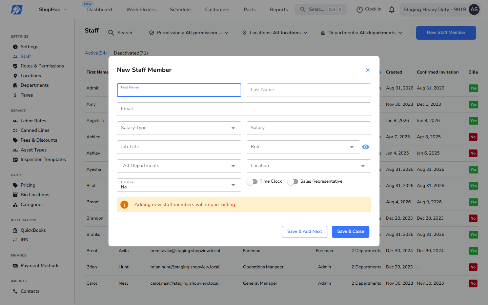
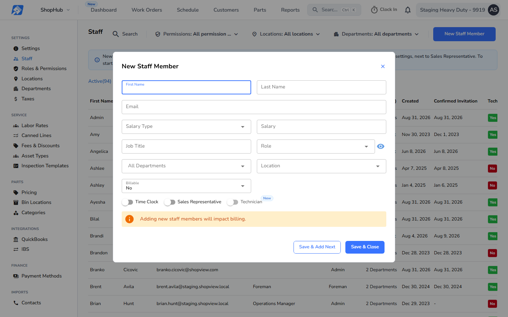
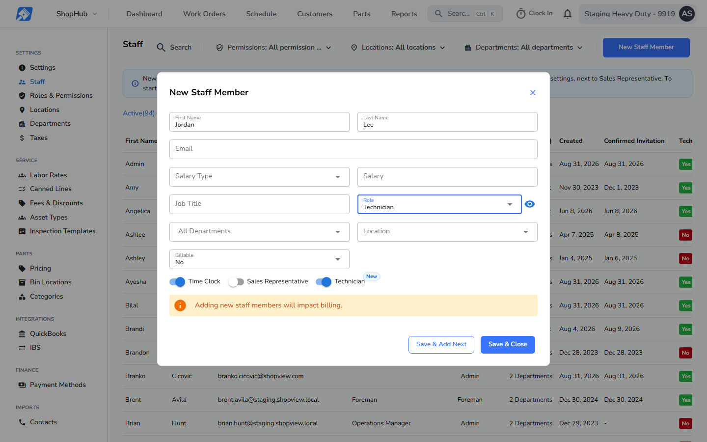
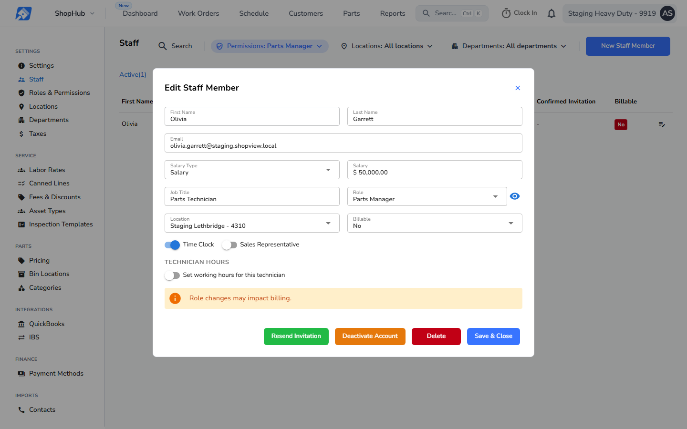
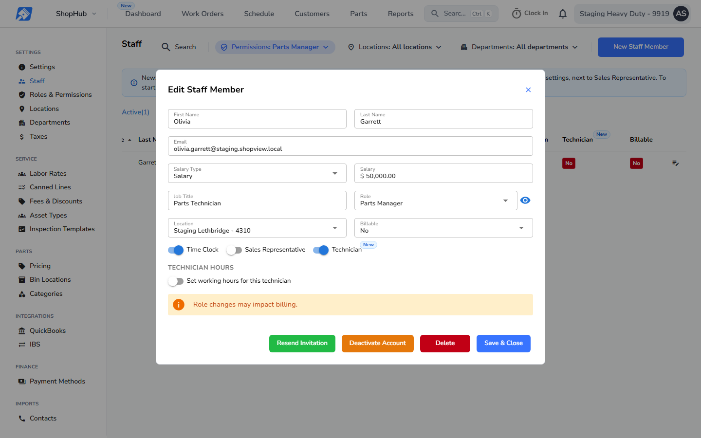
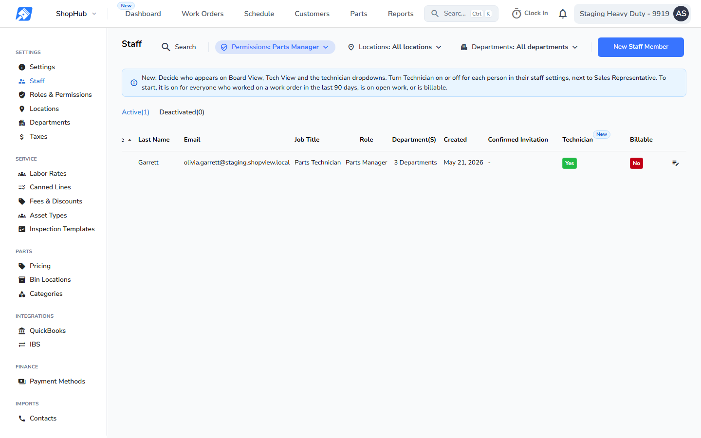

Settings, Staff. Top row: New Staff Member, in production, then this build as it opens and with the Technician role picked. Bottom row, left to right: Edit Staff Member for Olivia Garrett (a Parts Manager with Time Clock on, the SV-11719 case) in production, then this build off, switched on, and the staff list after Save. In both windows the toggles share one row below Billable: Time Clock, Sales Representative, Technician. Before: production code (release v26.43.1). After: this build.





